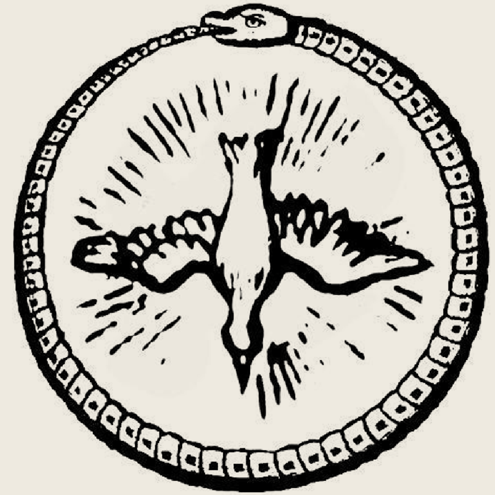
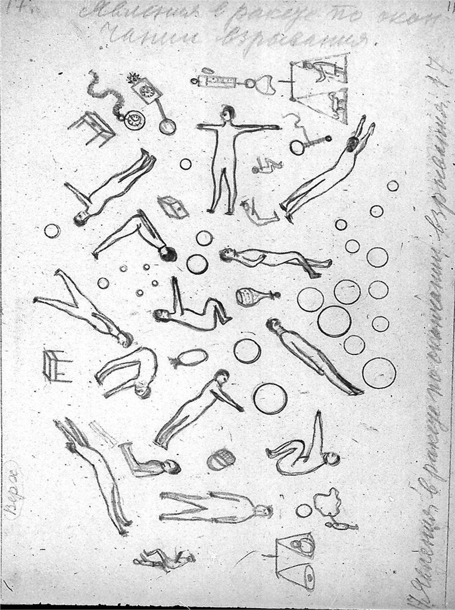

Cosmismo

| Origen | Rusia, principios del siglo XX |
| Figura clave | Konstantín Tsiolkovski |
| Idea central | Causa Común |
El Cosmismo es una corriente cultural originada en Rusia a principios del siglo XX que proyecta a la humanidad conectada en una Causa Común hacia la conquista del espacio y a la solución tecnológica del problema de la muerte.
Esta doble lucha contra la entropía propone que el socialismo no debiera darse únicamente en el espacio, sino que también en el tiempo.
El Cosmismo se opone a la idea de Progreso, considerando que, en el proyecto progresista, los habitantes del tiempo presente y pasado son clases explotadas por los privilegiados habitantes del futuro.
El Cosmismo especula los medios económicos, sociales y técnicos que permitan resucitar por medios tecnológicos a todos los seres humanos que alguna vez poblaron la tierra. Pero claro, en esta era mesiánica (t'chiyat hametim) en la que la humanidad toda se reúne finalmente: ¿dónde vivirá esta humanidad reunida, de esta tierra ahora superpoblada?
La segunda pata del pensamiento Cosmista es precisamente la completitud del proyecto de lo humano expandido hacia la conquista del espacio. No será nuestra lejana prole la que alcanzará los cielos, sino nuestros ancestros.
Esta corriente fue fundamental para el desarrollo de la ciencia soviética, integrando el movimiento cosmista figuras claves como Konstantín Tsiolkovski, padre de la cosmonáutica.
Desarrollo en la Argentina
████ █████ █████ █████ ██████ ███████ ███████ █████ ███ ████████ ████████ █████ ████ ██████ █████ ██████ ████ █████ █████ █████ ██████ ███████ ███████ █████ ███ ████████ ████████ █████ ████ ██████